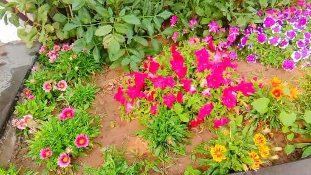
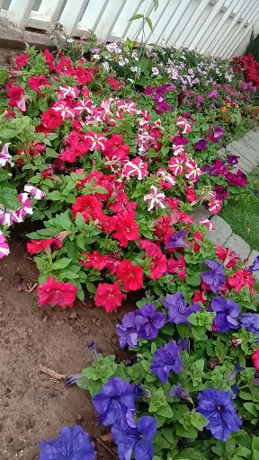

Nature Lovers
 I am here to share my thoughts about flowers and how much i passionate to taking photpgraphs of flowers...
I like different kinds of flowering plants like lily, roses, exora, lotus and many more. Their color and structure attracts me more, when i see blossom flowers i really wish i could be a flower. There is nothing more beautiful than a fresh, blooming flower. The colors are so vibrant and the petals are so soft and pleasing to heart. Flowers add a touch of beauty to the environment and they make everyone smile. There is something special about flowers, and they always make people happy.
Jungle geranium has wide variety of difeerent shdes flowers. It is mostly plated in gardens, Home and in other places as well. It is Attractive and beautiful flowering colors.
Lotus flowers is known as national flower. There are various kinds of colors on lotus flower like red,yellow, pink and so on so.